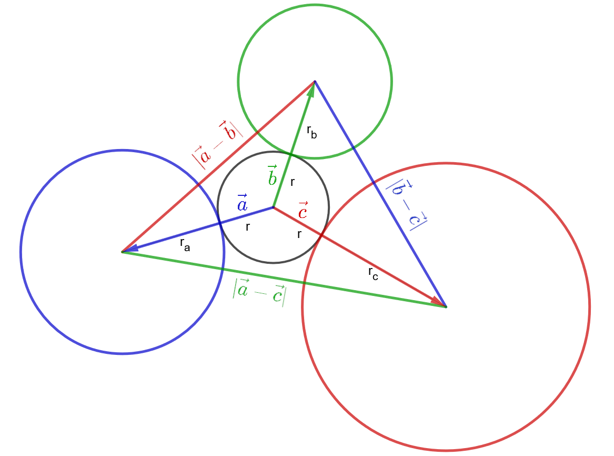
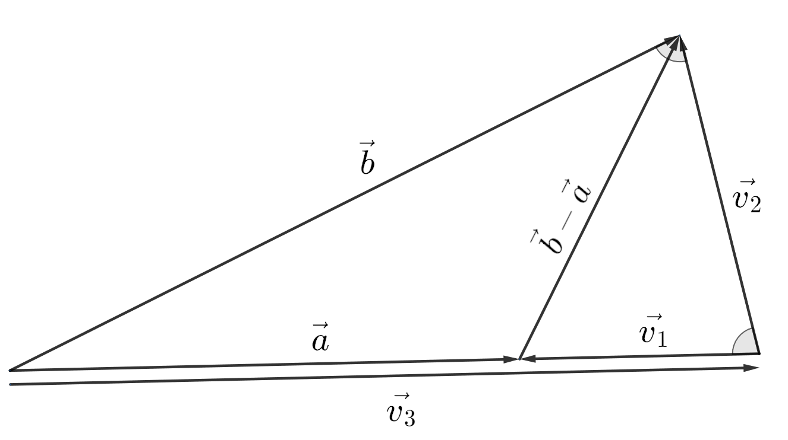
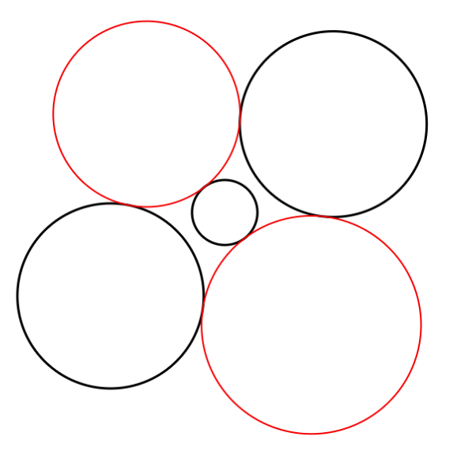
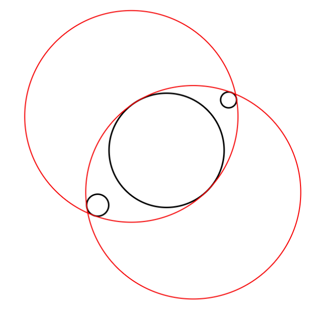
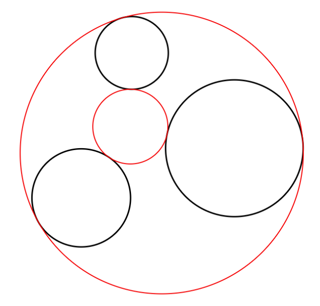
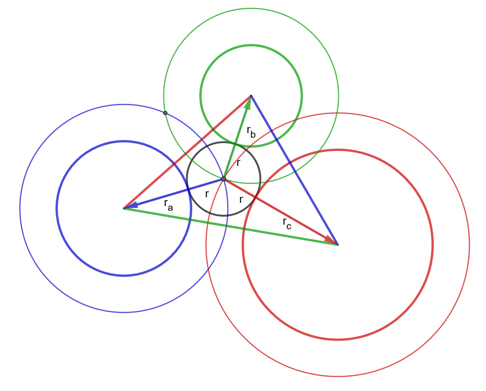

Click and drag points to move them.
Click and drag the canvas to pan the view.
Scroll to zoom in and out.
Press 1 through 8 to toggle which of the 8 solutions are visible. Press 0 to hide all solutions. Press 9 to show all solutions.
Press H to hide/show points.
I recommend using Chrome, Edge, Opera, or Brave instead of Firefox, as Firefox does not draw large circles accurately.
Visit my YouTube channel here.
The problem of Apollonius is a relatively challenging geometry problem where, given three circles, the goal is to find a circle tangent to all three. There may exist as many as eight or as few as zero solutions, though solutions tend to come in pairs. Occasionally, a solution circle may have an "infinite radius" meaning that it is identical to a straight line which is tangent to the three circles. Solving the problem of Apollonius for the unknown radius is as simple as finding the roots of a quadratic. However, some of the approaches I attempted were naive because they introduced radicals that, when squared out, produced 4th degree or 8th degree polynomials. One could find two such higher degree polynomials and compute the GCD of the two polynomials to get the solution quadratic (which I have done successfully), but this is not a very elegant approach. Factoring is also an option, but not a very efficient one. Luckily I found an interesting paper called "Radii of Circles in Apollonius' Problem" by Milorad R. Stevanovic, Predrag B. Petrovic, and Marina M. Stevanovic which details a nice trigonometric solution that results in a quadratic polynomial. I liked it so much that I wanted to write about their approach and create an interactive JavaScript implementation of the solutions as seen above. Their solution was trigonometric in nature, but I think vector algebra is an interesting lens through which to view this problem. The solution outlined by Stevanovic et al. can be restated in the style of vector algebra without much difficulty; that is what I do on this page.
Take a moment to observe the following diagram:
We wish to find the radius of the inner circle \(r\) given the known radii \(r_a\), \(r_b\), and \(r_c\). The vectors \(\vec{a}\), \(\vec{b}\), and \(\vec{c}\) point from the center of the solution circle to the centers of the given circles. Then the vector magnitudes \(\lvert\vec{a}\rvert\), \(\lvert\vec{b}\rvert\), and \(\lvert\vec{c}\rvert\), are equal to \(\left(r+r_a\right)\), \(\left(r+r_b\right)\), and \(\left(r+r_c\right)\), respectively. The side lengths of the largest triangle are equal the magnitudes of the differences of each vector: \(\lvert\vec{a}-\vec{b}\rvert\), \(\lvert\vec{b}-\vec{c}\rvert\), and \(\lvert\vec{a}-\vec{c}\rvert\).
Since we are working inside of a 2D plane, it is important to note that any vector is a linear combination of any other two vectors (provided they are not parallel). This means, for example, that we could express \(\vec{c}\) as a linear combination of \(\vec{a}\) and \(\vec{b}\):
$$\large \vec{c} = m\vec{a} + n\vec{b}$$Where \(m\) and \(n\) are scalars.
We could then create equations to solve for \(m\) and \(n\) knowing that the dot product of \(\vec{a}\) and \(\vec{c}\) is the same as the dot product of \(\vec{a}\) and \(m\vec{a} + n\vec{b}\), and the dot product of \(\vec{b}\) and \(\vec{c}\) is the same as the dot product of \(\vec{b}\) and \(m\vec{a} + n\vec{b}\):
$$\large \vec{a}\cdot\vec{c}=\vec{a}\cdot\left(m\vec{a} + n\vec{b}\right)$$ $$\large \vec{a}\cdot\vec{c}=m\lvert\vec{a}\rvert^2 + n\left(\vec{a}\cdot\vec{b}\right)$$We can scale both equations to make it easy to eliminate the \(n\) term:
$$\large \vec{a}\cdot\vec{c}=m\lvert\vec{a}\rvert^2 + n\left(\vec{a}\cdot\vec{b}\right)$$ $$\large \left(\vec{a}\cdot\vec{c}\right)\lvert\vec{b}\rvert^2=m\lvert\vec{a}\rvert^2\lvert\vec{b}\rvert^2 + n\left(\vec{a}\cdot\vec{b}\right)\lvert\vec{b}\rvert^2$$Then we can subtract the two equations to actually eliminate the \(n\) term:
$$\large \left(\vec{a}\cdot\vec{c}\right)\lvert\vec{b}\rvert^2=m\lvert\vec{a}\rvert^2\lvert\vec{b}\rvert^2 + n\left(\vec{a}\cdot\vec{b}\right)\lvert\vec{b}\rvert^2$$ $$\large - $$ $$\large \left(\vec{a}\cdot\vec{b}\right)\left(\vec{b}\cdot\vec{c}\right)=m\left(\vec{a}\cdot\vec{b}\right)^2 + n\left(\vec{a}\cdot\vec{b}\right)\lvert\vec{b}\rvert^2$$ $$\large = $$ $$\large \left(\vec{a}\cdot\vec{c}\right)\lvert\vec{b}\rvert^2-\left(\vec{a}\cdot\vec{b}\right)\left(\vec{b}\cdot\vec{c}\right)=m\left(\lvert\vec{a}\rvert^2\lvert\vec{b}\rvert^2 - \left(\vec{a}\cdot\vec{b}\right)^2\right)$$We have solved for \(m\):
$$\large m=\frac{\left(\vec{a}\cdot\vec{c}\right)\lvert\vec{b}\rvert^2-\left(\vec{a}\cdot\vec{b}\right)\left(\vec{b}\cdot\vec{c}\right)}{\lvert\vec{a}\rvert^2\lvert\vec{b}\rvert^2 - \left(\vec{a}\cdot\vec{b}\right)^2}$$We may do the same for \(n\):
$$\large n=\frac{\left(\vec{b}\cdot\vec{c}\right)\lvert\vec{a}\rvert^2-\left(\vec{a}\cdot\vec{b}\right)\left(\vec{a}\cdot\vec{c}\right)}{\lvert\vec{a}\rvert^2\lvert\vec{b}\rvert^2 - \left(\vec{a}\cdot\vec{b}\right)^2}$$Once again, we can express \(\vec{c}\) as a linear combination of \(\vec{a}\) and \(\vec{b}\), substituting the values for \(m\) and \(n\):
$$\large \vec{c} = \frac{\left(\vec{a}\cdot\vec{c}\right)\lvert\vec{b}\rvert^2-\left(\vec{a}\cdot\vec{b}\right)\left(\vec{b}\cdot\vec{c}\right)}{\lvert\vec{a}\rvert^2\lvert\vec{b}\rvert^2 - \left(\vec{a}\cdot\vec{b}\right)^2}\vec{a} + \frac{\left(\vec{b}\cdot\vec{c}\right)\lvert\vec{a}\rvert^2-\left(\vec{a}\cdot\vec{b}\right)\left(\vec{a}\cdot\vec{c}\right)}{\lvert\vec{a}\rvert^2\lvert\vec{b}\rvert^2 - \left(\vec{a}\cdot\vec{b}\right)^2}\vec{b}$$Finally, we'll dot both sides with \(\vec{c}\):
$$\large \vec{c}\cdot\vec{c} = \frac{\left(\vec{a}\cdot\vec{c}\right)\lvert\vec{b}\rvert^2-\left(\vec{a}\cdot\vec{b}\right)\left(\vec{b}\cdot\vec{c}\right)}{\lvert\vec{a}\rvert^2\lvert\vec{b}\rvert^2 - \left(\vec{a}\cdot\vec{b}\right)^2}\left(\vec{a}\cdot\vec{c}\right) + \frac{\left(\vec{b}\cdot\vec{c}\right)\lvert\vec{a}\rvert^2-\left(\vec{a}\cdot\vec{b}\right)\left(\vec{a}\cdot\vec{c}\right)}{\lvert\vec{a}\rvert^2\lvert\vec{b}\rvert^2 - \left(\vec{a}\cdot\vec{b}\right)^2}\left(\vec{b}\cdot\vec{c}\right)$$ $$\large \lvert\vec{c}\rvert^2 = \frac{\left(\vec{a}\cdot\vec{c}\right)^2\lvert\vec{b}\rvert^2-\left(\vec{a}\cdot\vec{b}\right)\left(\vec{b}\cdot\vec{c}\right)\left(\vec{a}\cdot\vec{c}\right)}{\lvert\vec{a}\rvert^2\lvert\vec{b}\rvert^2 - \left(\vec{a}\cdot\vec{b}\right)^2} + \frac{\left(\vec{b}\cdot\vec{c}\right)^2\lvert\vec{a}\rvert^2-\left(\vec{a}\cdot\vec{b}\right)\left(\vec{b}\cdot\vec{c}\right)\left(\vec{a}\cdot\vec{c}\right)}{\lvert\vec{a}\rvert^2\lvert\vec{b}\rvert^2 - \left(\vec{a}\cdot\vec{b}\right)^2}$$Multiply both sides by \(\lvert\vec{a}\rvert^2\lvert\vec{b}\rvert^2 - \left(\vec{a}\cdot\vec{b}\right)^2\):
$$\large \lvert\vec{a}\rvert^2\lvert\vec{b}\rvert^2\lvert\vec{c}\rvert^2 - \left(\vec{a}\cdot\vec{b}\right)^2\lvert\vec{c}\rvert^2 = \left(\vec{a}\cdot\vec{c}\right)^2\lvert\vec{b}\rvert^2-\left(\vec{a}\cdot\vec{b}\right)\left(\vec{b}\cdot\vec{c}\right)\left(\vec{a}\cdot\vec{c}\right) + \left(\vec{b}\cdot\vec{c}\right)^2\lvert\vec{a}\rvert^2-\left(\vec{a}\cdot\vec{b}\right)\left(\vec{b}\cdot\vec{c}\right)\left(\vec{a}\cdot\vec{c}\right)$$ $$\large \left(\vec{b}\cdot\vec{c}\right)^2\lvert\vec{a}\rvert^2+ \left(\vec{a}\cdot\vec{c}\right)^2\lvert\vec{b}\rvert^2+\left(\vec{a}\cdot\vec{b}\right)^2\lvert\vec{c}\rvert^2-2\left(\vec{a}\cdot\vec{b}\right)\left(\vec{b}\cdot\vec{c}\right)\left(\vec{a}\cdot\vec{c}\right)-\lvert\vec{a}\rvert^2\lvert\vec{b}\rvert^2\lvert\vec{c}\rvert^2=0$$Divide both sides by \( \lvert\vec{a}\rvert^2\lvert\vec{b}\rvert^2\lvert\vec{c}\rvert^2\):
$$\large \left(\frac{\vec{a}\cdot\vec{b}}{\lvert\vec{a}\rvert\lvert\vec{b}\rvert}\right)^2+\left(\frac{\vec{b}\cdot\vec{c}}{\lvert\vec{b}\rvert\lvert\vec{c}\rvert}\right)^2+\left(\frac{\vec{a}\cdot\vec{c}}{\lvert\vec{a}\rvert\lvert\vec{c}\rvert}\right)^2-2\left(\frac{\vec{a}\cdot\vec{b}}{\lvert\vec{a}\rvert\lvert\vec{b}\rvert}\right)\left(\frac{\vec{b}\cdot\vec{c}}{\lvert\vec{b}\rvert\lvert\vec{c}\rvert}\right)\left(\frac{\vec{a}\cdot\vec{c}}{\lvert\vec{a}\rvert\lvert\vec{c}\rvert}\right)-1=0$$This is equivalent to the identity:
$$\large \cos^2{\varphi_1}+\cos^2{\varphi_2}+\cos^2{\varphi_3}-2\cos{\varphi_1}\cos{\varphi_2}\cos{\varphi_3}-1=0$$From the paper by Stevanovic et al., where \(\varphi_1\), \(\varphi_2\), and \(\varphi_3\) are the angles between each vector. These identities are only true when the vectors \(\vec{a}\), \(\vec{b}\), and \(\vec{c}\) lie in the same plane, or \(\varphi_1+\varphi_2+\varphi_3=2\pi\). This cosine identity can also be discovered by expanding \(\cos{\left(\varphi_1+\varphi_2+\varphi_3\right)}=1\) using the angle sum formula for cosine, and then using the fact that in a plane, \(\sin{\varphi_1}\sin{\varphi_2}=\cos{\varphi_1}\cos{\varphi_2}-\cos{\varphi_3}\) because \(\varphi_3=2\pi-\left(\varphi_1+\varphi_2\right)\).
Let's find an expression for \(\frac{\vec{a}\cdot\vec{b}}{\lvert\vec{a}\rvert\lvert\vec{b}\rvert}\). We'll do this by deriving the law of cosines with vector algebra. Consider the following diagram:
In this diagram, we create an isosceles triangle by scaling \(\vec{a}\) until it has the same length as \(\vec{b}\). By definition, \(\vec{v_3}\) is just \(\vec{a}\) scaled to the magnitude of \(\vec{b}\):
$$\large \vec{v_3}=\frac{\lvert\vec{b}\rvert}{\lvert\vec{a}\rvert}\vec{a}$$The magnitude of \(\vec{v_1}\) is \(\lvert\vec{b}\rvert-\lvert\vec{a}\rvert\). Additionally, \(\vec{v_1}\) is the difference between \(\vec{a}\) and \(\vec{v_3}\):
$$\large \vec{v_1}=\vec{a}-\vec{v_3}$$ $$\large \vec{v_1}=\vec{a}-\frac{\lvert\vec{b}\rvert}{\lvert\vec{a}\rvert}\vec{a}$$ $$\large \vec{v_1}=\left(1-\frac{\lvert\vec{b}\rvert}{\lvert\vec{a}\rvert}\right)\vec{a}$$\(\vec{v_2}\) is the difference between \(\vec{b}\) and \(\vec{v_3}\):
$$\large \vec{v_2}=\vec{b}-\vec{v_3}$$ $$\large \vec{v_2}=\vec{b}-\frac{\lvert\vec{b}\rvert}{\lvert\vec{a}\rvert}\vec{a}$$It's clear that \(\vec{b}-\vec{a}=\vec{v_2}-\vec{v_1}\), so:
$$\large \lvert\vec{v_2}-\vec{v_1}\rvert^2=\left(\vec{v_2}-\vec{v_1}\right)\cdot\left(\vec{v_2}-\vec{v_1}\right) $$ $$\large \lvert\vec{b}-\vec{a}\rvert^2=\lvert\vec{v_2}\rvert^2+\lvert\vec{v_1}\rvert^2-2\left(\vec{v_2}\cdot\vec{v_1}\right) $$ $$\large \lvert\vec{b}-\vec{a}\rvert^2=\left(\vec{b}-\frac{\lvert\vec{b}\rvert}{\lvert\vec{a}\rvert}\vec{a}\right)\cdot\left(\vec{b}-\frac{\lvert\vec{b}\rvert}{\lvert\vec{a}\rvert}\vec{a}\right)+\left[\left(1-\frac{\lvert\vec{b}\rvert}{\lvert\vec{a}\rvert}\right)\vec{a}\right]\cdot\left[\left(1-\frac{\lvert\vec{b}\rvert}{\lvert\vec{a}\rvert}\right)\vec{a}\right]-2\left[\left(\vec{b}-\frac{\lvert\vec{b}\rvert}{\lvert\vec{a}\rvert}\vec{a}\right)\cdot\left(1-\frac{\lvert\vec{b}\rvert}{\lvert\vec{a}\rvert}\right)\vec{a}\right]$$ $$\large \lvert\vec{b}-\vec{a}\rvert^2=\left(2\lvert\vec{b}\rvert^2-2\frac{\lvert\vec{b}\rvert}{\lvert\vec{a}\rvert}\left(\vec{a}\cdot\vec{b}\right)\right)+\left(\lvert\vec{a}\rvert-\lvert\vec{b}\rvert\right)^2-2\left(\left(1-\frac{\lvert\vec{b}\rvert}{\lvert\vec{a}\rvert}\right)\left(\vec{a}\cdot\vec{b}\right)-\lvert\vec{a}\rvert\lvert\vec{b}\rvert+\lvert\vec{b}\rvert^2\right)$$ $$\large \lvert\vec{b}-\vec{a}\rvert^2=\left(\lvert\vec{a}\rvert-\lvert\vec{b}\rvert\right)^2+2\lvert\vec{a}\rvert\lvert\vec{b}\rvert-2\left(\vec{a}\cdot\vec{b}\right)$$ $$\large 2\left(\vec{a}\cdot\vec{b}\right)=2\lvert\vec{a}\rvert\lvert\vec{b}\rvert+\left(\lvert\vec{a}\rvert-\lvert\vec{b}\rvert\right)^2-\lvert\vec{b}-\vec{a}\rvert^2$$ $$\large \frac{\vec{a}\cdot\vec{b}}{\lvert\vec{a}\rvert\lvert\vec{b}\rvert}=1+\frac{\left(\lvert\vec{a}\rvert-\lvert\vec{b}\rvert\right)^2-\lvert\vec{a}-\vec{b}\rvert^2}{2\lvert\vec{a}\rvert\lvert\vec{b}\rvert}$$I like the above method because it automatically (and geometrically) produces \(\left(\lvert\vec{a}\rvert-\lvert\vec{b}\rvert\right)^2\), which allows the \(r\) terms to cancel. But you can also just do some quick factoring: $$\lvert\vec{a}-\vec{b}\rvert^2=\left(\vec{a}-\vec{b}\right)\cdot\left(\vec{a}-\vec{b}\right)$$ $$\lvert\vec{a}-\vec{b}\rvert^2=\lvert\vec{a}\rvert^2+\lvert\vec{b}\rvert^2-2\left(\vec{a}\cdot\vec{b}\right)$$ $$\lvert\vec{a}-\vec{b}\rvert^2=\lvert\vec{a}\rvert^2-2\lvert\vec{a}\rvert\lvert\vec{b}\rvert+\lvert\vec{b}\rvert^2+2\lvert\vec{a}\rvert\lvert\vec{b}\rvert-2\left(\vec{a}\cdot\vec{b}\right)$$ $$\lvert\vec{a}-\vec{b}\rvert^2=\left(\lvert\vec{a}\rvert-\lvert\vec{b}\rvert\right)^2+2\lvert\vec{a}\rvert\lvert\vec{b}\rvert-2\left(\vec{a}\cdot\vec{b}\right)$$ $$2\left(\vec{a}\cdot\vec{b}\right)=2\lvert\vec{a}\rvert\lvert\vec{b}\rvert+\left(\lvert\vec{a}\rvert-\lvert\vec{b}\rvert\right)^2-\lvert\vec{a}-\vec{b}\rvert^2$$ $$\frac{\vec{a}\cdot\vec{b}}{\lvert\vec{a}\rvert\lvert\vec{b}\rvert}=1+\frac{\left(\lvert\vec{a}\rvert-\lvert\vec{b}\rvert\right)^2-\lvert\vec{a}-\vec{b}\rvert^2}{2\lvert\vec{a}\rvert\lvert\vec{b}\rvert}$$
We have an expression for \(\frac{\vec{a}\cdot\vec{b}}{\lvert\vec{a}\rvert\lvert\vec{b}\rvert}\); let's now substitute \(\left(r+r_a\right)\) and \(\left(r+r_b\right)\):
$$\large \frac{\vec{a}\cdot\vec{b}}{\lvert\vec{a}\rvert\lvert\vec{b}\rvert}=1+\frac{\left(r+r_a-\left(r+r_b\right)\right)^2-|\vec{a}-\vec{b}|^2}{2(r+r_a)(r+r_b)}$$ $$\large \frac{\vec{a}\cdot\vec{b}}{\lvert\vec{a}\rvert\lvert\vec{b}\rvert}=1+\frac{\left(r_a-r_b\right)^2-|\vec{a}-\vec{b}|^2}{2(r+r_a)(r+r_b)}$$As you can see, the \(r\) in the numerator vanishes. For simplicity, let:
$$\large t_a = \frac{\left(r_b-r_c\right)^2-|\vec{b}-\vec{c}|^2}{2(r+r_b)(r+r_c)}$$ $$\large t_b = \frac{\left(r_a-r_c\right)^2-|\vec{a}-\vec{c}|^2}{2(r+r_a)(r+r_c)}$$ $$\large t_c = \frac{\left(r_a-r_b\right)^2-|\vec{a}-\vec{b}|^2}{2(r+r_a)(r+r_b)}$$So that:
$$\large \frac{\vec{b}\cdot\vec{c}}{\lvert\vec{b}\rvert\lvert\vec{c}\rvert}=1+t_a$$ $$\large \frac{\vec{a}\cdot\vec{c}}{\lvert\vec{a}\rvert\lvert\vec{c}\rvert}=1+t_b$$ $$\large \frac{\vec{a}\cdot\vec{b}}{\lvert\vec{a}\rvert\lvert\vec{b}\rvert}=1+t_c$$Substitute them back into the original equation of cosines:
$$\large \left(1+t_a\right)^2+\left(1+t_b\right)^2+\left(1+t_c\right)^2-2\left(1+t_a\right)\left(1+t_b\right)\left(1+t_c\right)-1=0$$ $$\large t_a^2 + t_b^2 + t_c^2 -2 \left(t_a t_b + t_b t_c + t_a t_c + t_a t_b t_c\right) =0$$Let's express \(t_a\), \(t_b\), \(t_c\) as a constant divided by twice the product of the original vector lengths:
$$\large t_a = \frac{K_a}{2\lvert\vec{b}\rvert\lvert\vec{c}\rvert}$$ $$\large t_b = \frac{K_b}{2\lvert\vec{a}\rvert\lvert\vec{c}\rvert}$$ $$\large t_c = \frac{K_c}{2\lvert\vec{a}\rvert\lvert\vec{b}\rvert}$$Where:
$$\large K_a = \left(r_b - r_c\right)^2 - \lvert\vec{b} - \vec{c}\rvert^2$$ $$\large K_b = \left(r_a - r_c\right)^2 - \lvert\vec{a} - \vec{c}\rvert^2$$ $$\large K_c = \left(r_a - r_b\right)^2 - \lvert\vec{a} - \vec{b}\rvert^2$$We can substitute them back into the equation of cosines:
$$\large \frac{K_a^2}{4\lvert\vec{b}\rvert^2\lvert\vec{c}\rvert^2} + \frac{K_b^2}{4\lvert\vec{a}\rvert^2\lvert\vec{c}\rvert^2} + \frac{K_c^2}{4\lvert\vec{a}\rvert^2\lvert\vec{b}\rvert^2} - \frac{K_a K_b}{2\lvert\vec{a}\rvert\lvert\vec{b}\rvert\lvert\vec{c}\rvert^2} - \frac{K_b K_c}{2\lvert\vec{a}\rvert^2\lvert\vec{b}\rvert\lvert\vec{c}\rvert} - \frac{K_a K_c}{2\lvert\vec{a}\rvert\lvert\vec{b}\rvert^2\lvert\vec{c}\rvert} - \frac{K_a K_b K_c}{4\lvert\vec{a}\rvert^2\lvert\vec{b}\rvert^2\lvert\vec{c}\rvert^2} =0$$Finally, we'll multiply both sides by \(4\lvert\vec{a}\rvert^2\lvert\vec{b}\rvert^2\lvert\vec{c}\rvert^2\):
$$\large K_a^2 \lvert\vec{a}\rvert^2+K_b^2 \lvert\vec{b}\rvert^2+K_c^2 \lvert\vec{c}\rvert^2 - 2 K_a K_b \lvert\vec{a}\rvert \lvert\vec{b}\rvert- 2 K_b K_c \lvert\vec{b}\rvert \lvert\vec{c}\rvert - 2 K_a K_c \lvert\vec{a}\rvert \lvert\vec{c}\rvert - K_a K_b K_c=0$$Hopefully it's clear that this is a quadratic equation of \(r\) which can be solved with the quadratic formula after substituting \(\left(r+r_a\right)\), \(\left(r+r_b\right)\), and \(\left(r+r_c\right)\) for \(\lvert\vec{a}\rvert\), \(\lvert\vec{b}\rvert\), and \(\lvert\vec{c}\rvert\). In other words, the equation takes the form:
$$\large A r^2 + B r + C = 0$$Where:
$$\large A = K_a^2 + K_b^2 + K_c^2 - 2 K_a K_b - 2 K_b K_c - 2 K_a K_c$$ $$\large B = 2 K_a^2 r_a + 2 K_b^2 r_b + 2 K_c^2 r_c - 2 K_a K_b \left(r_a + r_b\right) - 2 K_b K_c \left(r_b + r_c\right) - 2 K_a K_c \left(r_a + r_c\right)$$ $$\large C = K_a^2 r_a^2 + K_b^2 r_b^2 + K_c^2 r_c^2 - 2 K_a K_b r_a r_b - 2 K_b K_c r_b r_c - 2 K_a K_c r_a r_c - K_a K_b K_c$$ $$\large K_a = \left(r_b - r_c\right)^2 - \lvert\vec{b} - \vec{c}\rvert^2$$ $$\large K_b = \left(r_a - r_c\right)^2 - \lvert\vec{a} - \vec{c}\rvert^2$$ $$\large K_c = \left(r_a - r_b\right)^2 - \lvert\vec{a} - \vec{b}\rvert^2$$The quadratic formula tells us that:
$$\large r=\frac{-B\pm\sqrt{B^2-4AC}}{2A}$$We know at least one of those solutions should be the radius of the inner circle in the original diagram.
What if we want to find the other seven solutions? Not every solution circle is externally tangent to all of the three given circles; some have internal tangencies. One could imagine substituting \(\left(r-r_a\right)\), \(\left(r-r_b\right)\), and \(\left(r-r_c\right)\) for \(\lvert\vec{a}\rvert\), \(\lvert\vec{b}\rvert\) and \(\lvert\vec{c}\rvert\) to get the solution circle that is internally tangent to all of the given circles. In general, any combination of \(\left(r\pm r_a\right)\), \(\left(r\pm r_b\right)\), and \(\left(r\pm r_c\right)\) could be substituted, for a total of eight combinations. To see why there are up to eight possible combinations, count in binary with three bits, where a 0 represents a \(\left(+\right)\) and a 1 represents a \(\left(-\right)\) to enumerate all possible solutions. Making all those substitutions would yield eight quadratic polynomials with the desired solutions, but this is redundant. Observe the coefficients of the solution quadratic. Notice how when substituting \(-r_a\), \(-r_b\), and \(-r_c\) for \(r_a\), \(r_b\), and \(r_c\), the only thing that changes is the sign of \(B\). Now notice how substituting \(-r\) for \(r\) has the exact same effect, which is to negate \(B\). And, substituting \(-r\) for \(r\) is the same as reflecting the solution parabola about the vertical axis (the roots simply change sign). This means that the quadratic containing the solution for \(\left(r+r_a\right)\), \(\left(r+r_b\right)\), and \(\left(r+r_c\right)\) also contains the solution for \(\left(r-r_a\right)\), \(\left(r-r_b\right)\), and \(\left(r-r_c\right)\). It also means that it's only necessary to generate a total of four combinations for \(\left(r\pm r_a\right)\) and \(\left(r\pm r_b\right)\) and leave the sign in \(\left(r+r_c\right)\) untouched, since those four quadratic polynomials will contain the specified solution radius as well as its "dual" solution radius for a total of eight solutions. Let's go back to the specific case of the quadratic polynomial generated by \(\left(r+r_a\right)\), \(\left(r+r_b\right)\), and \(\left(r+r_c\right)\). The above logic implies:
If both \(r\)'s are positive, then both circles are externally tangent:
If both \(r\)'s are negative, then both circles are internally tangent:
If one \(r\) is positive and the other is negative, then one circle is externally tangent and the other is internally tangent:
There is more than one way to find the position of the solution circle once the value of \(r\) is known. The method I used involves finding the point that has distances \(\lvert\vec{a}\rvert\), \(\lvert\vec{b}\rvert\), and \(\lvert\vec{c}\rvert\) from the given circle centers. Set the radius of the circles with centers \(\vec{a}\), \(\vec{b}\), and \(\vec{c}\) to \(\lvert\vec{a}\rvert\), \(\lvert\vec{b}\rvert\), and \(\lvert\vec{c}\rvert\) (instead of \(r_a\), \(r_b\), and \(r_c\)). Next, find the two intersection points of the circles with centers \(\vec{a}\) and \(\vec{b}\). Finally, figure out which of those two points is also on the circle with center \(\vec{c}\) by comparing their distance to the circle center \(\vec{c}\) with the radius \(\lvert\vec{c}\rvert\):
The paper by Stevanovic et al. also solves this problem for the case of a sphere tangent to four given spheres, though with a seemingly different approach. However, I'm curious if the vector algebra approach I described on this page can be generalized to higher dimensions; I have not yet made an attempt. The idea would be to do the same thing but with four vectors:
$$\large \vec{d}=m\vec{a}+n\vec{b}+o\vec{c}$$And solve for \(m\), \(n\), and \(o\). One would then substitute those expressions back in and dot both sides with \(\vec{d}\).